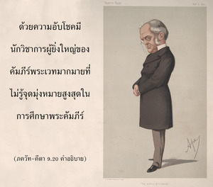
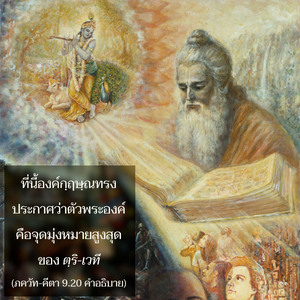
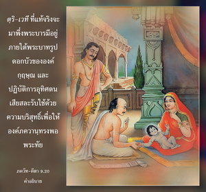

พวกที่ศึกษาคัมภีร์พระเวทและดื่มน้ำ โสม แสวงหาโลกสวรรค์ บูชาข้าทางอ้อมเมื่อบริสุทธิ์ขึ้นจากผลบาป และมีบุญไปเกิดบนโลกสวรรค์ของพระอินทร์ซึ่งจะได้รับความสุขสำราญแบบชาวสวรรค์



คำว่า ไตฺร-วิทฺยาห์ หมายถึง คัมภีร์พระเวททั้งสาม สาม, ยชุรฺ และฤคฺ พฺราหฺมณ ผู้ศึกษาคัมภีร์พระเวททั้งสามเล่มนี้เรียกว่า ตฺริ-เวที ผู้ใดที่ยึดมั่นกับความรู้ที่มาจากคัมภีร์พระเวททั้งสามเล่มนี้ เป็นอย่างมากจะเป็นที่เคารพนับถือในสังคม ด้วยความอับโชคมีนักวิชาการผู้ยิ่งใหญ่ของคัมภีร์พระเวทมากมายที่ไม่รู้จุดมุ่งหมายสูงสุดในการศึกษาพระคัมภีร์ ดังนั้น ณ ที่นี้องค์กฺฤษฺณทรงประกาศว่าตัวพระองค์คือจุดมุ่งหมายสูงสุดของตฺริ-เวที ตฺริ-เวที ที่แท้จริงจะมาพึ่งพระบารมีอยู่ภายใต้พระบาทรูปดอกบัวขององค์กฺฤษฺณ และปฏิบัติการอุทิศตนเสียสละรับใช้ด้วยความบริสุทธิ์เพื่อให้องค์ภควานฺทรงพอพระทัย การอุทิศตนเสียสละรับใช้เริ่มจากการสวดภาวนาบทมนต์ หเร กฺฤษฺณ และพยายามเข้าใจองค์กฺฤษฺณตามความเป็นจริงควบคู่กันไป ด้วยความอับโชคที่พวกนักศึกษาคัมภีร์พระเวทอย่างเป็นทางการสนใจ แค่พิธีบูชาที่ถวายให้เทวดา เช่น พระอินทร์และพระจันทร์เท่านั้น จากความพยายามเช่นนี้ผู้บูชาเทวดาได้รับความบริสุทธิ์จากมลทินแห่งคุณสมบัติธรรมชาติวัตถุที่ต่ำกว่า จากนั้นก็พัฒนาไปสู่ระบบดาวเคราะห์ที่สูงกว่าหรือโลกสวรรค์ เช่น มหโรฺลก, ชนโลก, ตโปโลก ฯลฯ เมื่อสถิตในระบบดาวเคราะห์ที่สูงกว่าเหล่านี้จะสามารถสนองประสาทสัมผัสของตนเองดีกว่าในโลกนี้เป็นร้อยๆ พันๆ เท่า